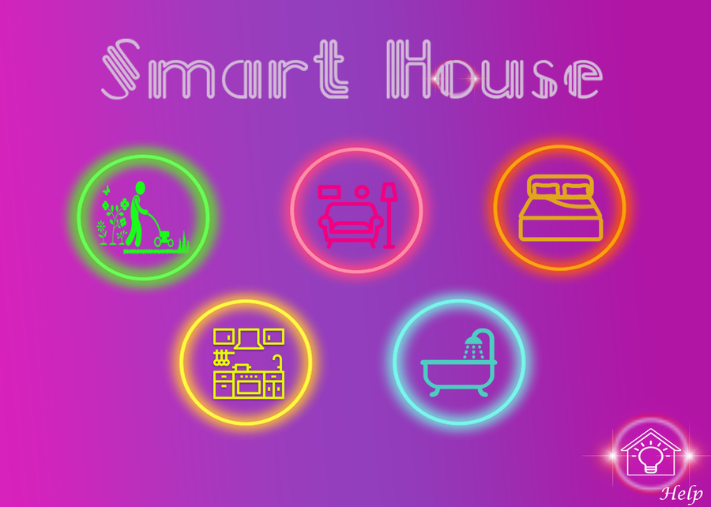
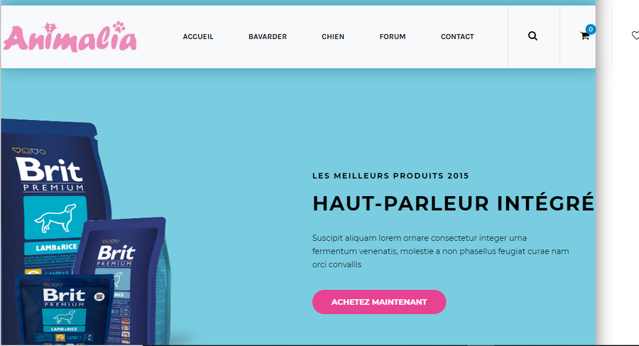
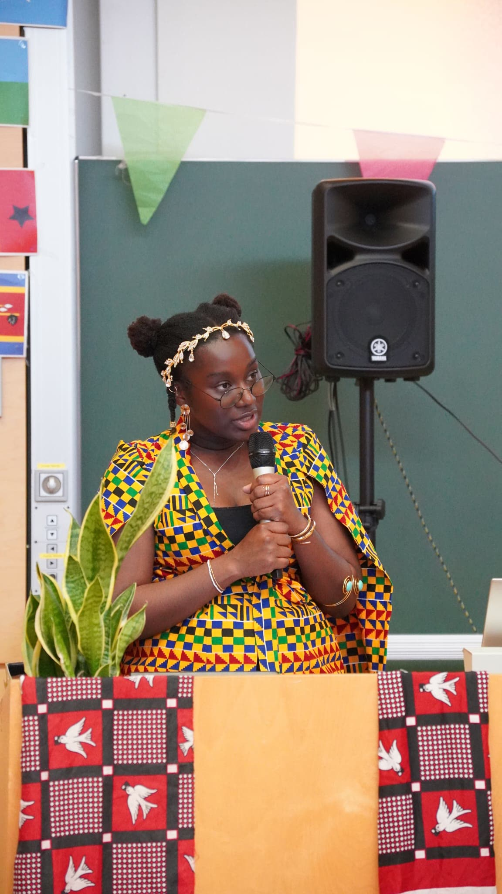
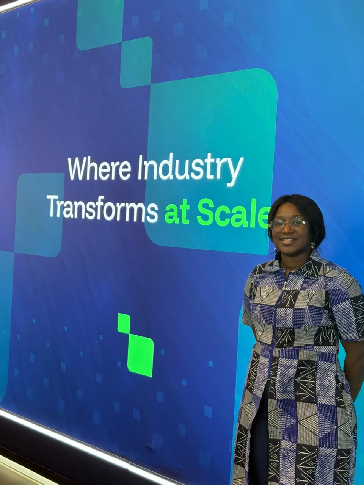
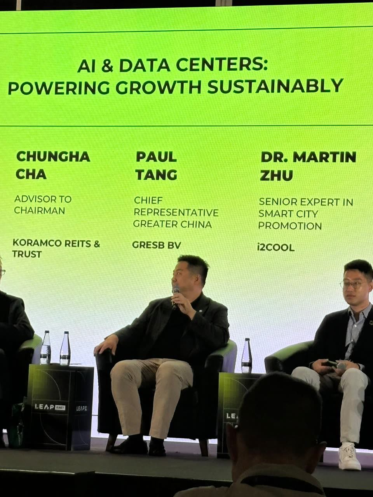
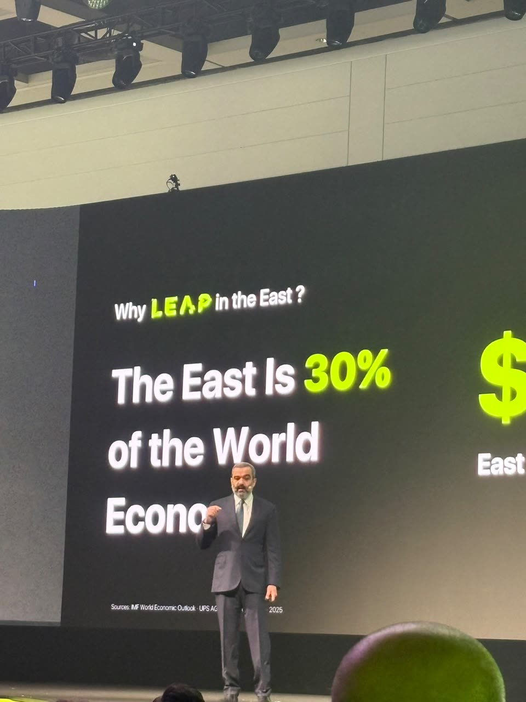
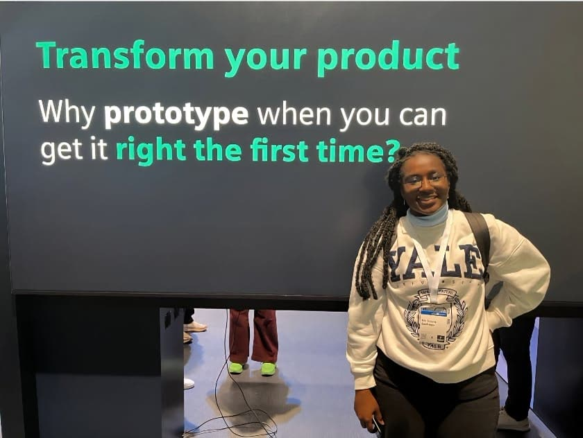

I build, deploy and run data and AI applications end to end. For nearly three years in Germany, I've turned ideas into working software: I talk to the people who will use it, write the code, build the pipelines and ship it to production.
I like being responsible for a project: understanding what the customer needs, shaping the solution with the team, building it and keeping it running after launch.
Engineering
Develop, deploy, automate
Web apps and APIs, machine learning models, build and deployment pipelines with Azure Pipelines, vector search and LLM applications.
Consulting
Turn business needs into technical solutions
I connect business and technical teams. My economics studies help me understand costs, priorities and what really matters to the customer.
Remote & travel-ready
Focused remotely, on site when it counts
I do my most productive work remotely, with clear and regular communication with the team. And I'm happy to travel to customers and teams wherever the project needs me.
Experience
Experience & Education
Three years of industry AI and data work in Germany, a machine learning research internship, and an engineering education completed by economics.
Work experience
AI Engineering· Intershop Communications AG
Nov 2023 – Sep 2026
Germany · Product Lifecycle team, then DevOps, Product & AI
Built DocuBot, a RAG chatbot on LangChain, integrated into Microsoft Teams and later migrated to the company's internal AI agent platform
Key contributor to chatbots for online stores (Intershop Agent Builders) and to the company website chatbot
Built an automated weekly indexing pipeline for the knowledge base, integrated Azure Search and designed data structures with Support, Marketing and Engineering
Prepared product data and PDFs for customer demos of e-commerce AI agents
Validated answer quality when switching LLMs; ran performance and load tests (Apache JMeter, InfluxDB, Grafana)
Automated internal processes with n8n; analysed KPIs and wrote technical evaluation reports
"From the very beginning, Ms. Ouedraogo demonstrated an exceptionally quick grasp of new topics."Reference letter, Intershop
Dresden, Germany · Machine Learning team · 6 months
"elevait in:docs" project: extracting information from documents whose layouts are known but not fully fixed.
Reduced the effort to add a new layout to the extraction pipeline, from a single example
Researched and selected approaches and research datasets, then curated a dataset from real customer data
Implemented and compared approaches: ABBYY OCR, layout graphs with NetworkX, morphological tagging
"She consistently achieved above-average results."Employment reference, elevait (translated from German)
PythonABBYY OCRNetworkXDocument AIScrum
Summer internships· Simac & Glia
Jul – Aug 2019
Tunis
Simac: built the messaging management for the company website (HTML, CSS, JavaScript)
Glia: built a 3D-printed stethoscope for an open-source medical hardware project (Prusa, PrusaSlicer)
Education
National Engineering Diploma, Computer Science· ESPRIT
Jun 2023
Tunis, Tunisia · Data Science track · EUR-ACE accredited
Engineering programme specialised in data science: software engineering, databases, machine learning and deep learning, with many team projects of 5–6 people.
Baccalaureate, Series D (Mathematics & Sciences)
2017
Ouagadougou, Burkina Faso · with honours (mention Bien)
B.A. International Business & Economics· Hochschule Schmalkalden
Final year
Germany · thesis planned Jan – Mar 2027
Circumstances led me to study economics, and I learned to love it. My thesis will look at how digitalisation and cross-border payments can help small businesses trade within the African Continental Free Trade Area (AfCFTA).
Projects
Projects & Portfolio
From a video game in C to RAG assistants: 13 projects, solo and in teams, that show how I design, build and deliver.
RAG · IntershopLangChain · Azure
DocuBot, a RAG assistant for documentation
A chatbot that answers questions from company documentation. Built on LangChain, integrated into Microsoft Teams, fed by a weekly indexing pipeline and Azure Search, then migrated to the internal AI agent platform.
LangChainRAGAzure SearchMicrosoft Teams
Company project · code confidential
Document AI · InternshipPython · ABBYY
Recurring document layout analysis
At Elevait: detecting layouts that repeat across business documents, so information extraction becomes more reliable and faster. OCR configured for specific entities, document structure modelled as graphs.
ABBYY OCRNetworkXInformation extraction
Company project · code confidential
End-to-end ML · TelecomPython · Django
Customer churn prediction app
A model that flags customers likely to cancel, built into a Django web app: a non-technical user enters a profile and gets an instant prediction.
Upload an image, get the most similar ones back. Images become embeddings indexed in Milvus, behind a Python API organised in routing and service layers.
Hospital lab results predict whether a patient needs in-care or out-care treatment. Built in TensorFlow, rebuilt in PyTorch, then compared in a report.
An app that automates data entry from a company's financial statements, scores its solvency and classifies it as vulnerable or not, with dashboards that speed up loan decisions.
One platform in web, desktop and mobile versions for associations: user management and donation management for shelters. A 7-month school project.
SymfonyJava SECodename One
ESPRIT · 2019–2020

IoT · Team of 5C++ · Qt · Arduino
Smart Home desktop app
A desktop app that controls home appliances through sensors: real-time temperature for each room and automatic suggestions.
C++QtArduinoSensors
ESPRIT · 2018–2019

E-commerce · Team of 5PHP · JavaScript
Animalia online shop
The e-commerce site for a pet shop selling accessories and toys: catalogue, cart and orders.
PHPMySQLHTML/CSSJavaScript
ESPRIT · 2018–2019
Video game · Team of 5C · SDL
Stay Out, a horror puzzle game
The player arrives at a haunted mansion and has to solve a series of riddles to move forward, such as "Find a famous Picasso painting". Wrong answers cost lives. The game has a full menu (new game, load game, settings) and saves progress.
My role: character movement, life and score handling, and integrating every module into the final game. Written in C with SDL, in a team of 5, over 7 months.
CSDLGame logic
ESPRIT · 2017–2018
Certificates
Certificates, Diplomas & References
Continuous learning in AI and data science, verifiable online, my diplomas, and what my former employers say.
Switch Maker, supported by UNCDF · Ouagadougou · Sep 2020
Diplomas
National Engineering Diploma, Computer Science
ESPRIT, Tunis · June 2023
EUR-ACE accreditedData Science track
Master's level (5 years). European accreditation for engineering programmes.
B.A. International Business & Economics
Hochschule Schmalkalden, Germany · in progress
Thesis 2027
Thesis on digital trade for small businesses in the AfCFTA.
Baccalaureate, Series D
Université Ouaga I Pr Joseph Ki-Zerbo, Burkina Faso · 2017
With honours (mention Bien)
Mathematics and natural sciences.
Copies of diplomas available on request.
What my employers say
"From the very beginning, Ms. Ouedraogo demonstrated an exceptionally quick grasp of new topics. She proactively obtained all information necessary for her work and proceeded in a structured and goal-oriented manner."
Intershop Communications AG · reference letter, 2026
"She approached difficult tasks methodically and with energy, and found sensible, practical solutions, even under increased time pressure. She consistently achieved above-average results."
elevait GmbH & Co. KG · employment reference, 2023 (translated from German)
The full documents (employment references from Intershop and elevait, and an English reference letter) are available on request via LinkedIn.
Events
Leadership & Events
Beyond code: I organise, speak on stage and connect people across Africa and Europe.
Co-organiserSpeaker
STIC'26 · Sahal Tech Innovation Challenge
Final · 22 Aug 2026 · Ouaga 2000, Ouagadougou, Burkina Faso
A tech innovation competition run by Sahal Tech Innovation Labs. I helped organise the competition and spoke on stage at the final, in front of participants, partners and officials.

President, Afro community SchmalkaldenCo-organiser
Afrikalden, 1st edition
Schmalkalden, Germany
A cultural event showcasing African culture and the business opportunities across the continent. As president of the Afro community in Schmalkalden, I co-organised the very first edition and hosted the programme on stage.

Video · no sound


AttendeeNetworking
LEAP East 2026
Tech conference · 2026
An international conference on AI, data centres and the digital economy. I followed sessions such as "AI & Data Centers: Powering Growth Sustainably" and met industry leaders to talk about AI and opportunities between regions, as in the video.

Visitor
Hannover Messe 2025
Hannover, Germany
The world's leading industrial trade fair. I went to see how AI, automation and digital twins are changing industry, and to meet companies.
Skills
Skills & Expertise
What I use to go from an idea to an application running in production.
An engineer at heart. Economics made me a better one.
I'm not the candidate who ticks every box. I'm the one who won't let go of a problem until it's solved.
I take ownership
From the first customer conversation to support after launch, I feel responsible for the result.
I work with people
Customers, product team, developers: I talk to everyone to build the right solution.
Remote, and ready to travel
I'm most productive remotely. And when a project excites me, I go wherever I need to be.
I give everything when the work matters
When I feel respected and my work has impact, I give it everything I have.
I'm a computer science engineer specialised in data science. I learned to code by writing a video game in C, then built websites, desktop and mobile apps, connected devices, and finally machine learning models and AI applications.
For nearly three years in Germany, I've built AI and data applications, set up pipelines and deployed what I create. That's what I love: taking charge of a project, talking with the customer, working with the team and delivering something that really works.
Why economics?
To be honest, I didn't plan to study economics. Circumstances led me there. But I learned to love it, and I decided to see it through: I'm finishing my B.A. in International Business & Economics at Hochschule Schmalkalden.
It gave me something many developers don't have: I understand costs, markets and how a business makes decisions, and I apply that in my work. But my calling hasn't changed: I'm a data scientist and a computer science engineer.
What I'm looking for
A company that gives me real challenges, in data science, AI engineering or consulting. I may not match 100% of the profile you're looking for, but if you want to invest in someone who commits fully to your company, let's talk.
Based inGermany
Work styleRemote, hybrid, travel-ready
LanguagesFrench, English, German (learning)
Looking forData Scientist · AI Engineer · Consulting
Anonymous
Not the right fit? Tell me why.
This form is anonymous: no name, no email, nothing that identifies you. A short, honest message helps me improve.
What was missing for your role?
What wasn't clear in my portfolio?
What did you like?
Got a challenge? Let's talk.
Open to Data Scientist, AI Engineer and consulting roles, remote, hybrid or with travel. Send me an email or a message on LinkedIn.